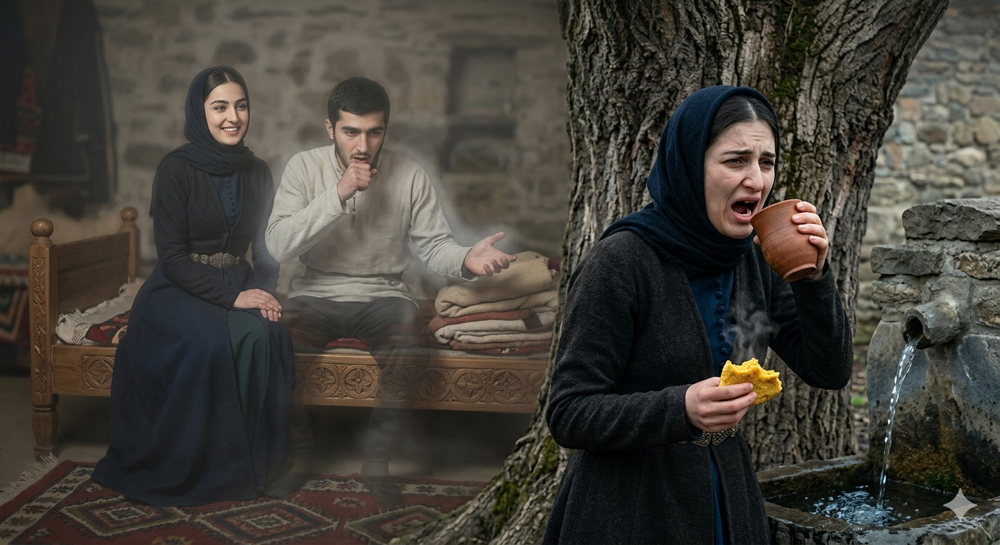

И.А. Дахкильгов. Хьехаме дувцарш - поучительные рассказы-притчи.
И.А. Дахкильгов. Хьехаме дувцарш - поучительные рассказы-притчи. Из ингушского фольклора.

Тийшача балхах даь васкет
ВӀаший дукха безаш, мерза бахаш хиннаб къона мари сесаги. ЦӀаьхха цхьа лазар а кхийтта, вала аьнна метта вижав мар. Сесаго хаьттад цунга: - Сона малагӀа васкет дут Ӏа? - ХӀара Ӏурра, со дагавохаш, йӀайха йолаш сискал яа, цу вай хьастара хий тӀа а молаш. Кхы хьога ала хӀама дац са, - аьннад маро. Мар венначул тӀехьагӀа, цун васкет кхоачашдеш хиннай сесаг. ЙӀайхача сискала шийла хий ӀотӀамелаш хиларах ши-кхо бутт балалехьа бага мел йола царг Ӏоежай цу кхалсага. Мочхалаш вӀашка денад цун. “Из-ма йоккха саг ма йий”, - оалаш, цхьанне а маьре йигаяц из. Маро из васкет даь хиннад, ший йиса сесаг кхычунга маьре ца яхийтар духьа. Цхьайолча хана безам а хул шийх къизал йоаллаш.
РУССКИЙ
Коварный завет
В любви и достатке жили молодые муж и жена, но внезапно муж заболел и слег в постель. Настал его смертный час. Жена спросила его: - Какой завет ты мне оставляешь? - Каждое утро, - отвечал муж, - вспоминая меня, испеки и съешь горячий кукурузный чурек, запивая его водою из нашего родника. Больше нечего мне тебе завещать. Мужа похоронили. Жена свято стала исполнять его завет. По утрам, вспоминая мужа, она ела горячий чурек и запивала его холодной водою. Через два-три месяца у молодой женщины повыпадали все зубы. Челюсти ее сомкнулись. Говоря: “Да она же старуха”, никто не захотел на ней жениться. Муж оставил ей такой завет, чтобы она ни за кого другого замуж не вышла. Иногда и любовь бывает жестокой и эгоистичной.
ENGLISH
НОХЧИЙН
ПОГОВОРКИ